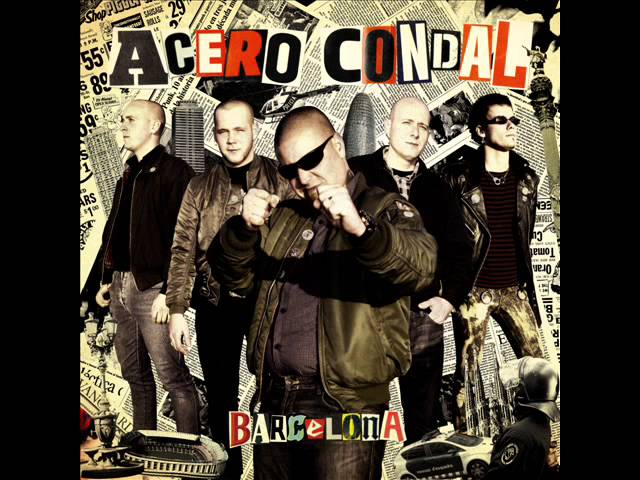
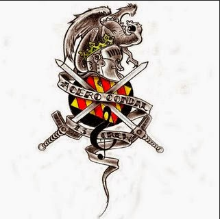
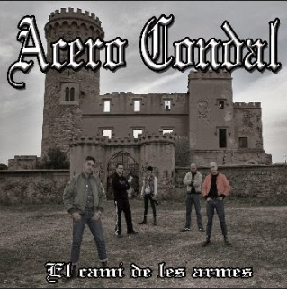
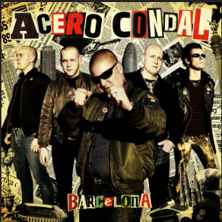
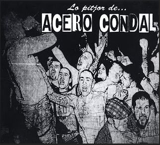

Acero Condal
Área de Combate cambia de nombre a Acero Condal en 2006 con la llegada de nuevos miembros. La banda sigue defendiendo su postura apolítica y presenta letras más profundas y musicalmente trabajadas.
Discografía
2006 - Acero Condal (Demo)

01- Barcelona
02- Bestia Bestia
03- Gordas Cazadoras
04- La Posesión De La Bestia
05- Mi Única Ley
2007 - El Camí De Les Armes

01- Brutal Destino
02- Traición Del Poder
03- Nunca Volverán
04- El Camí De Les Armes
2014 - Barcelona

01- Barcelona
02- Mantente Firme
03- De Ti Y De Mi
04- Mi Única Ley
05- Sr. Pulido
06- ¿Dónde Coño Está El Porrón?
2016 - Lo Pitjor De...

01- Brutal Destino
02- Traición Del Poder
03- Nunca Volverán
04- El Camí De Les Armes
05- Som Catalans
06- 13 Rotten Crew
07- Barcelona
08- Mantente Firme
09- De Ti Y De Mi
10- Mi Única Ley
11- Sr. Pulido
12- ¿Dónde Coño Está El Porrón?
13- Gordas Cazadoras
14- Perro Callejero
15- Alcohol Y Rock And Roll
16- La Posesión De La Bestia
17- La Veu Del Barça